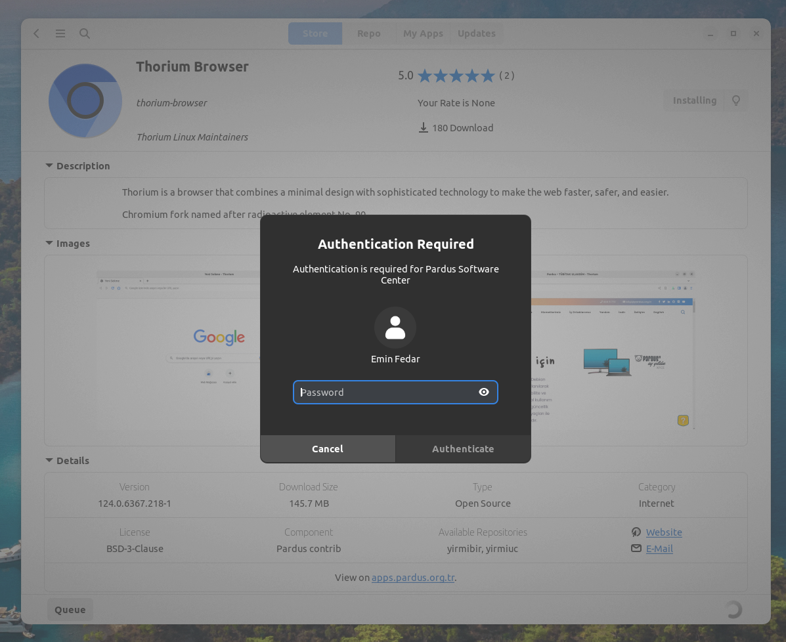
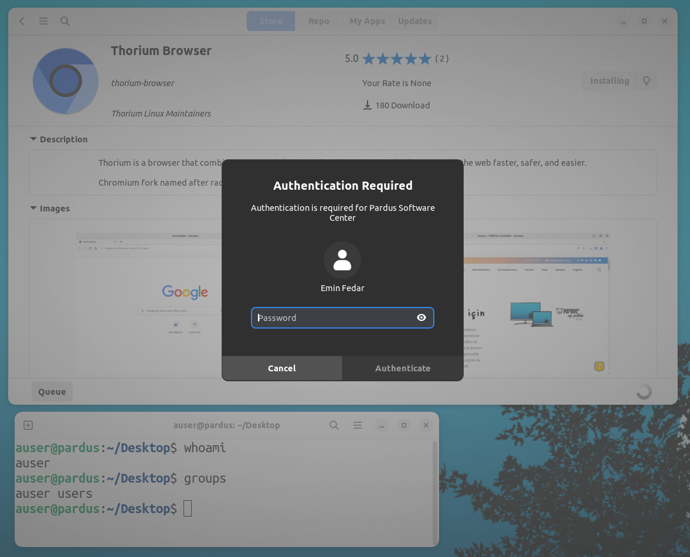
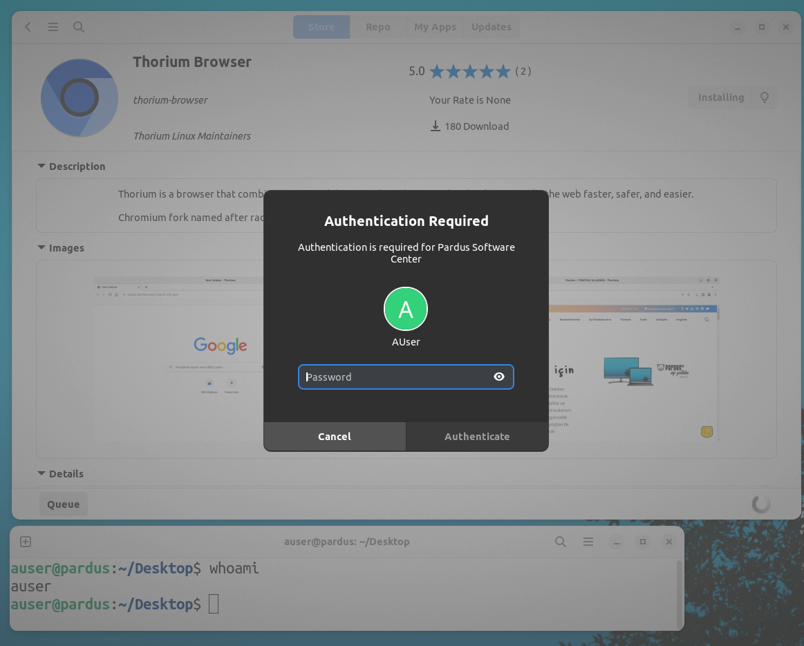

2024.05.30 - Emin Fedar
Using Polkit to Perform Root Privilege Actions in a GTK Application Without Asking for Root Password
In many Linux distributions, performing administrative tasks typically requires root privileges.
However, constantly entering the root password can be cumbersome, especially for repetitive tasks within a graphical application. Another case is that an unprivileged user should be able to do something a privileged user can do but without entering a root password.
Polkit (PolicyKit) is a toolkit for defining and handling authorizations, providing a way to centralize the management of system-wide privileges. By configuring Polkit correctly, we can allow certain actions to be performed without requiring the user to enter the root password every time.
This blog post will guide you through the process of using Polkit to perform an action that requires root privileges in a GTK application by clicking a button, without prompting the user for the root password.
- Prerequisites
Before we begin, ensure that you have the following:
- A Linux distribution with Polkit installed(most of them already have).
- Basic knowledge of creating Python + GTK applications.
- Root access to your system to add new Polkit configurations.
- Step 1: Understand Polkit and its Configuration
Polkit operates by defining actions that correspond to specific system-wide privileges.
You can define a policy in here:
- XML Policy (.policy):
/usr/share/polkit-1/actions/
And you can define additional rules for a policy or policies here:
- JavaScript Rules (.rules):
/usr/share/polkit-1/rules.d/(new way) - Local Authority Rules (.pkla):
/etc/polkit-1/localauthority/50-local.d/(old way)
- Step 2: Define a Custom Action (XML)
First, define a custom action for your application. Create an XML file, say com.example.myapp.policy (usually your.application.id.policy is the filename), in /usr/share/polkit-1/actions/.
Here is a real life example .policy file content used in Pardus Software(pardus-software):
<?xml version="1.0" encoding="UTF-8"?>
<!DOCTYPE policyconfig PUBLIC "-//freedesktop//DTD PolicyKit Policy Configuration 1.0//EN" "http://www.freedesktop.org/standards/PolicyKit/1.0/policyconfig.dtd">
<policyconfig>
<vendor>Pardus Developers</vendor>
<vendor_url>https://www.pardus.org.tr</vendor_url>
<action id="tr.org.pardus.pkexec.pardus-software-action">
<description>Pardus Software Center Authentication</description>
<message>Authentication is required for Pardus Software Center</message>
<message xml:lang="tr">Pardus Yazılım Merkezi için yetkilendirme gerekiyor</message>
<icon_name>preferences-system</icon_name>
<defaults>
<allow_any>auth_admin</allow_any>
<allow_inactive>auth_admin</allow_inactive>
<allow_active>auth_admin_keep</allow_active>
</defaults>
<annotate key="org.freedesktop.policykit.exec.path">/usr/share/pardus/pardus-software/src/Actions.py</annotate>
<annotate key="org.freedesktop.policykit.exec.allow_gui">true</annotate>
</action>
</policyconfig>
Let's examine the .policy file line by line:
<policyconfig> is the base tag:
<?xml version="1.0" encoding="UTF-8"?>
<!DOCTYPE policyconfig PUBLIC "-//freedesktop//DTD PolicyKit Policy Configuration 1.0//EN" "http://www.freedesktop.org/standards/PolicyKit/1.0/policyconfig.dtd">
<policyconfig>
...
</policyconfig>
<vendor> to inform user about who is the developer of the application:
<vendor>Pardus Developers</vendor>
<vendor_url>https://www.pardus.org.tr</vendor_url>
<action> tag defines the action that is to be performed:
<action id="tr.org.pardus.pkexec.pardus-software-action">
<description>Pardus Software Center Authentication</description>
<message>Authentication is required for Pardus Software Center</message>
<message xml:lang="tr">Pardus Yazılım Merkezi için yetkilendirme gerekiyor</message>
<icon_name>preferences-system</icon_name>
<defaults>
<allow_any>auth_admin</allow_any>
<allow_inactive>auth_admin</allow_inactive>
<allow_active>auth_admin_keep</allow_active>
</defaults>
<annotate key="org.freedesktop.policykit.exec.path">/usr/share/pardus/pardus-software/src/Actions.py</annotate>
<annotate key="org.freedesktop.policykit.exec.allow_gui">true</annotate>
</action>
<defaults> tag specifies implicit authorizations for clients [[1]]:
<defaults>
<allow_any>auth_admin</allow_any>
<allow_inactive>auth_admin</allow_inactive>
<allow_active>auth_admin_keep</allow_active>
</defaults>
allow_any: Implicit authorizations that apply to any client. (Optional)allow_inactive: Implicit authorizations that apply to clients in inactive sessions on local consoles. (Optional)allow_active: Implicit authorizations that apply to clients in active sessions on local consoles. (Optional)
Each of the allow_any, allow_inactive and allow_active elements can contain the following values [[1]]:
no: Not authorized.yes: Authorized without asking password.auth_self: Asks the password of the user of the current session.
Note that
auth_selfis not restrictive enough for most uses on multi-user systems.auth_adminis generally recommended.Because users are aware of their passwords but are unaware of the root or admin user password. Using auth_self can be acceptable if the modification just has an impact on the user itself.
auth_admin: Asks the password of the root or administrative user.-
auth_self_keep: Likeauth_selfbut the authorization is kept for a brief period (e.g. five minutes). The warning about auth_self above applies likewise. -
auth_admin_keep: Likeauth_adminbut the authorization is kept for a brief period (e.g. five minutes).
<annotate> Used for annotating an action with a key/value pair:
<annotate key="org.freedesktop.policykit.exec.path">/usr/share/pardus/pardus-software/src/Actions.py</annotate>
<annotate key="org.freedesktop.policykit.exec.allow_gui">true</annotate>
Here we defined path of the executable file, which can be executed with pkexec.
Setting the allow_gui true is important to make pkexec access the current user session environment of the user to work properly($DISPLAY and $XAUTHORITY env variables are retained). [[2]]
Important annotations [[1]]:
org.freedesktop.policykit.exec.path: is used by the pkexec program shipped with polkit.
- (e.g.:/usr/share/pardus/pardus-software/src/Actions.py)org.freedesktop.policykit.imply: can be used to define meta actions. The way it works is that if a subject is authorized for an action with this annotation, then it is also authorized for any action specified by the annotation. A typical use of this annotation is when defining an UI shell with a single lock button that should unlock multiple actions from distinct mechanisms.
- (e.g.:org.freedesktop.Flatpak.runtime-install org.freedesktop.Flatpak.runtime-update) [[3]]org.freedesktop.policykit.owner: can be used to define a set of users who can query whether a client is authorized to perform this action.
- (e.g.:unix-user:42 unix-user:colord unix-group:floppy)
- Examples
- Emin Fedar is an Administrative User.
-
AUser is a normal user.
-
When
auth_adminaction runs on Administrative User:

- When
auth_adminaction runs on Non Administrative User:

- When
auth_selfaction runs on Non Administrative User:

As you can see, auth_self is asking password of the current user, auth_admin is asking the password of the administrative user.
yes is not asking for a password and authorizing the user immediately.
- Step 3: Create a Polkit Rule with JavaScript (Optional, polkit version >= 0.106)
Authorization rules are intended for two specific audiences
- System Administrators
- Special-purpose Operating Systems / Environments
and those audiences only.
In particular, applications, mechanisms and general-purpose operating systems must never include any authorization rules.
Next, create a Polkit rule that allows this action without asking for the root password.
Create a file, say 10-myapp.rules, in /usr/share/polkit-1/rules.d/ with the following content:
polkit.addRule(function (action, subject) {
if (
action.id == "com.example.myapp.do-something" &&
subject.isInGroup("wheel")
) {
return polkit.Result.YES;
}
});
In this rule, we allow members of the wheel group to perform the action com.example.myapp.do-something without being prompted for a password.
polkit.Result enum values:
polkit.Result = {
NO: "no",
YES: "yes",
AUTH_SELF: "auth_self",
AUTH_SELF_KEEP: "auth_self_keep",
AUTH_ADMIN: "auth_admin",
AUTH_ADMIN_KEEP: "auth_admin_keep",
NOT_HANDLED: null,
};
Passwordless actions are possible with just .policy files too by setting <allow_active>yes</allow_active>.
But if you need more details to authorize the user (like the user must be in a certain group) you can add details with .rules file.
- Alternative Step 3: Local Authority Files (Optional)
Alternative to a .rules file, you can define basic rules in a .pkla file in the directory /etc/polkit-1/localauthority/50-local.d/ too.
An example .pkla file which authorizes spesific user group to perform the action com.example.myapp.do-something without asking a password from the user is shown below:
[Example Action]
Identity=unix-group:spesific-group
Action=com.example.myapp.do-something
ResultAny=yes
ResultInactive=yes
ResultActive=yes
- Step 4: Implement the GTK4 Application
Now, implement the GTK4 application. Below is a simple example in Python using PyGObject:
import subprocess
import gi
gi.require_version('Gtk', '4.0')
from gi.repository import Gtk
def run_privileged_script():
# Call a command that requires root privileges
command = ['pkexec', '/usr/bin/my-script']
subprocess.run(command)
# When the application is launched
def on_activate(app):
win = Gtk.ApplicationWindow(application=app)
btn = Gtk.Button(label='Hello, World!')
btn.connect('clicked', run_privileged_script)
win.set_child(btn)
win.present()
# Create a new application
app = Gtk.Application(application_id='com.example.GtkApplication')
app.connect('activate', on_activate)
# Run the application
app.run(None)
In this example, when the button is clicked, it executes a command via pkexec (part of Polkit), which performs an administrative task.
Since our Polkit rules allow this action without authentication for wheel group members, the command executes without prompting for a password.
- Conclusion
By following these steps, you can configure Polkit to allow specific administrative actions to be performed without requiring the root password every time.
- Create a .policy file with
<allow_active>yes</allow_active>and a privileged script to run in<annotate key="org.freedesktop.policykit.exec.path"></annotate> - Run that script with
pkexecin your application. - (Optional) Additional rules can be defined in .rules file.
Remember to carefully manage the permissions and ensure that only trusted users are allowed to perform these actions without authentication to maintain the security of your system.
Happy coding!